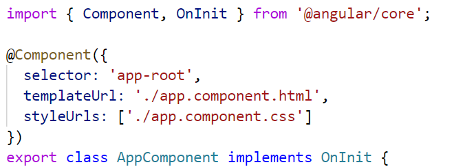

Angular is divided into lots of parts. Additionally to Angular you should know...
Angular is one giant mono repo.
Let's go through, step by step...
Angulars core parts - Modules, Components, DI container, compiler, etc.
Will be present in every Angular project.
Will help you design large forms with state and validation.

Often times used, but not mandatory.
Angular implementation of reactive routing with HTML5 history api.

Used in projects with more than one page.
Angular's animation system lets you build animations that run with the same kind of native performance found in pure CSS animations.

Build animations tailored for Angular framework running - e.g. lifecycles.
Migrate AngularJS applications with transition architectures step by step.

Angular with Angular CLI supports Server Side Rendering.
Angular Apps can run on the server and on the client.
... when SEO and performance really matter.
Angular with Angular CLI support Progressive Web Apps and Service Workers.

Build tools ported from Google internal projects and tooling running in all major editors.

And then there is Angular CLI
Here are a few highlights:
Angular Material offers lots of components,
ready to be used.
@ngrx: Reactive libraries for Angular
RxJS powered state management for Angular applications, inspired by Redux
When building large enterprise applications you will need "more than just MVC".